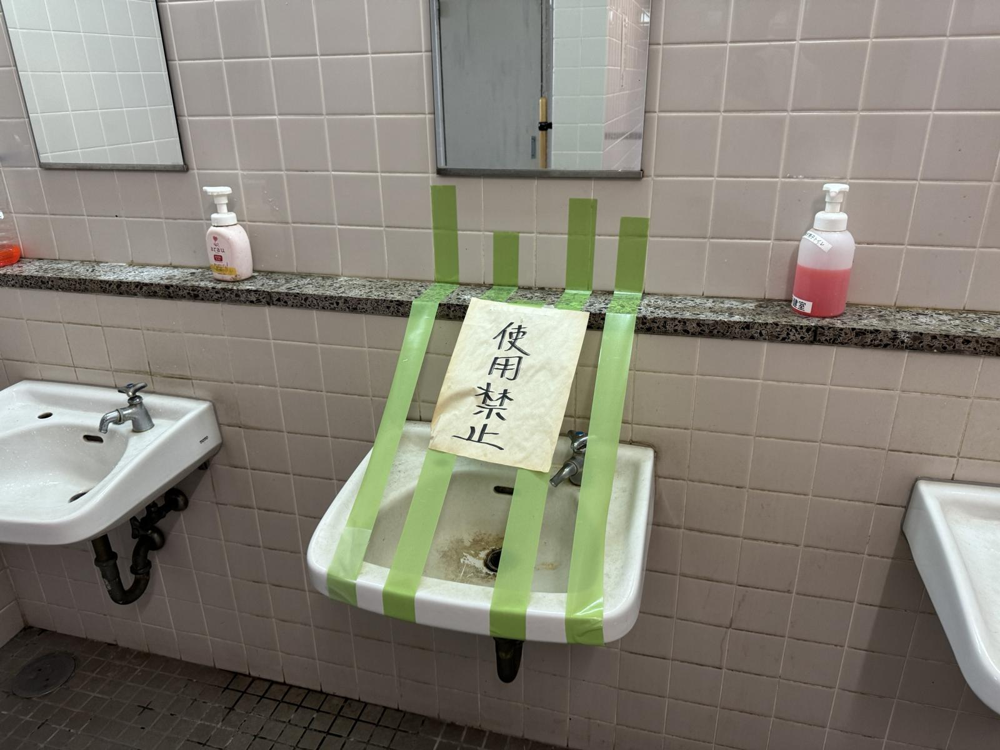
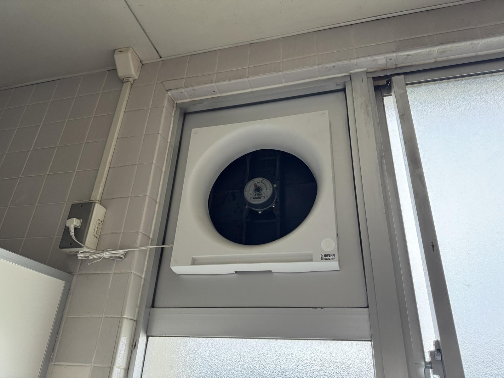

なぜトイレを調べるのか
本校のトイレでは、設備の故障や使用停止が日常的に起きています。


どちらも令和8年秋頃に撮影
近隣の県立高校にも古さを感じる一方で、私立高校には新しくきれいなトイレが多いように見えます。「高校のトイレはボロい」という印象は本当なのか、設置者や地域で違いはあるのかを、データで確かめます。
研究の背景
きっかけ
本校は、校舎や設備の老朽化が進んでいます。その中でも、私たちが特に気になったのが「トイレ」でした。
- 壊れている設備があるのは珍しくない
- 使用停止になることも日常的にある
- ひどいときは、離れた場所にいても臭いを感じる
近隣の県立高校を見ても設備の古さを感じる一方で、私立高校には比較的新しく、きれいなトイレが多いように感じます。
本校のトイレの状況
どちらも令和8年秋頃に撮影
私たちの問い
- 「高校のトイレはボロい」という印象は、本当に正しいのか。
- 学校の設置者（都県立・市立・国立・私立）や地域によって、違いはあるのか。
3つの方法で調べます
校内アンケート
- 対象
- 本校の生徒
- 知りたいこと
- 何が「ボロい」と感じさせるのか
古さ、汚れ、臭い、設備の故障など、どの要素が「ボロい」という印象につながっているのかを明らかにします。
街頭シールアンケート
- 対象
- 高校生
- 地域
- 東京都・千葉県・埼玉県・茨城県
- 知りたいこと
- 自分の高校のトイレへの印象
「古い―新しい」「汚い―綺麗」の2つの軸に、自分の高校のトイレの印象をシールで貼ってもらいます。回答者が通う高校は設置者ごとに分類し、地域や設置者による違いを分布図で比べます。
- 都立・県立
- 市立
- 国立
- 私立
他校へのフォームアンケート
- 対象
- 他校の生徒
- 知りたいこと
- 各校のトイレの実際の状態
設備の状態、故障や使用停止の状況、清潔さ、臭いなどを詳しく答えてもらいます。シールアンケートに協力してくださった方に、より詳しい調査への協力をお願いする場合もあります。
印象と実態をくらべる
何がボロさか校内アンケート
どう感じているか街頭シールアンケート
実際どうなのか他校フォームアンケート
3つの調査を組み合わせ、「高校のトイレは本当にボロいのか？」という素朴な疑問を、個人の印象だけでなく、複数の学校・地域・設置者のデータから検証します。
結果
ただいま調査中です
まとまり次第、このページで公開します。
メンバー
千葉県立流山高等学校 情報処理科の3名で研究しています。
- 平野情報処理科代表
- 廣瀬情報処理科
- 村山情報処理科
お問い合わせ
研究へのご質問、アンケートへのご協力、取材などのご連絡は、代表の平野までお寄せください。
学業の都合により、返信までお時間をいただく場合があります。